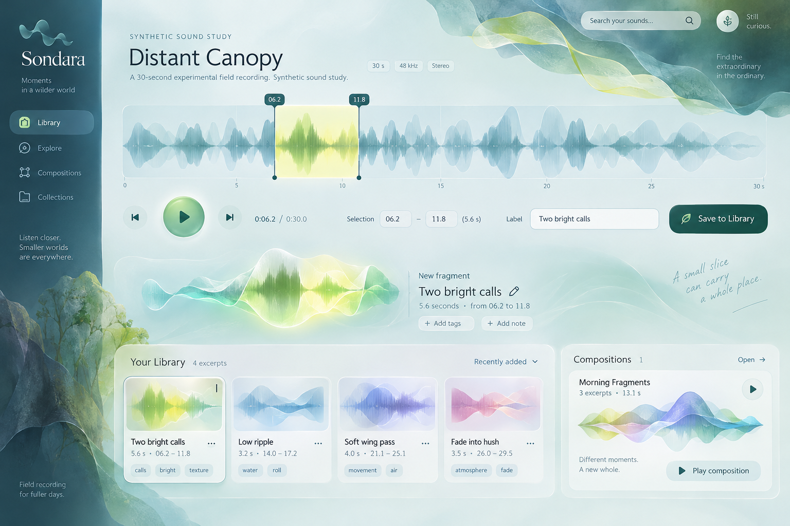
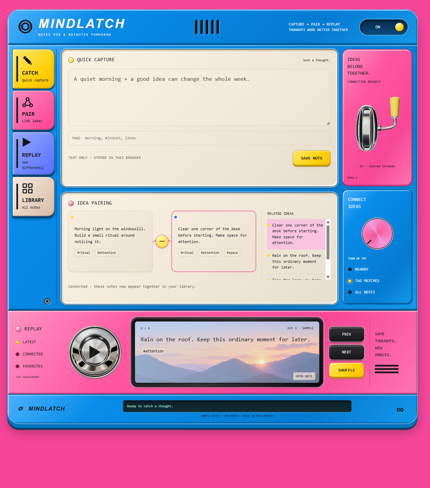

SondaraTranslucent glass, luminous ribbons, a static sound signature and live frequency response.Open working studySelected reference
MindlatchAssembled device lighting, chrome controls, direct interaction and a fitted strip display.Open preferred stripCurrent control revisionSelected reference